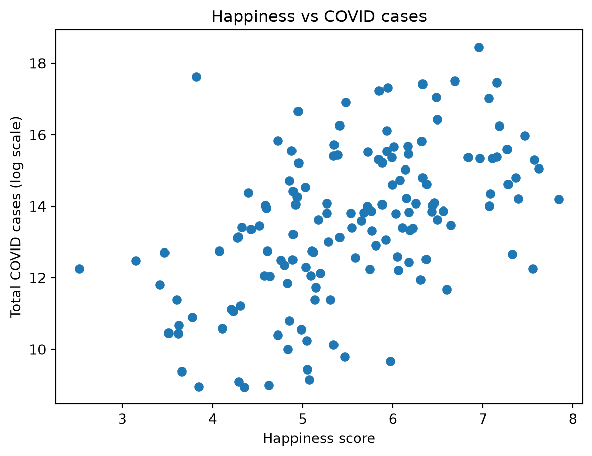
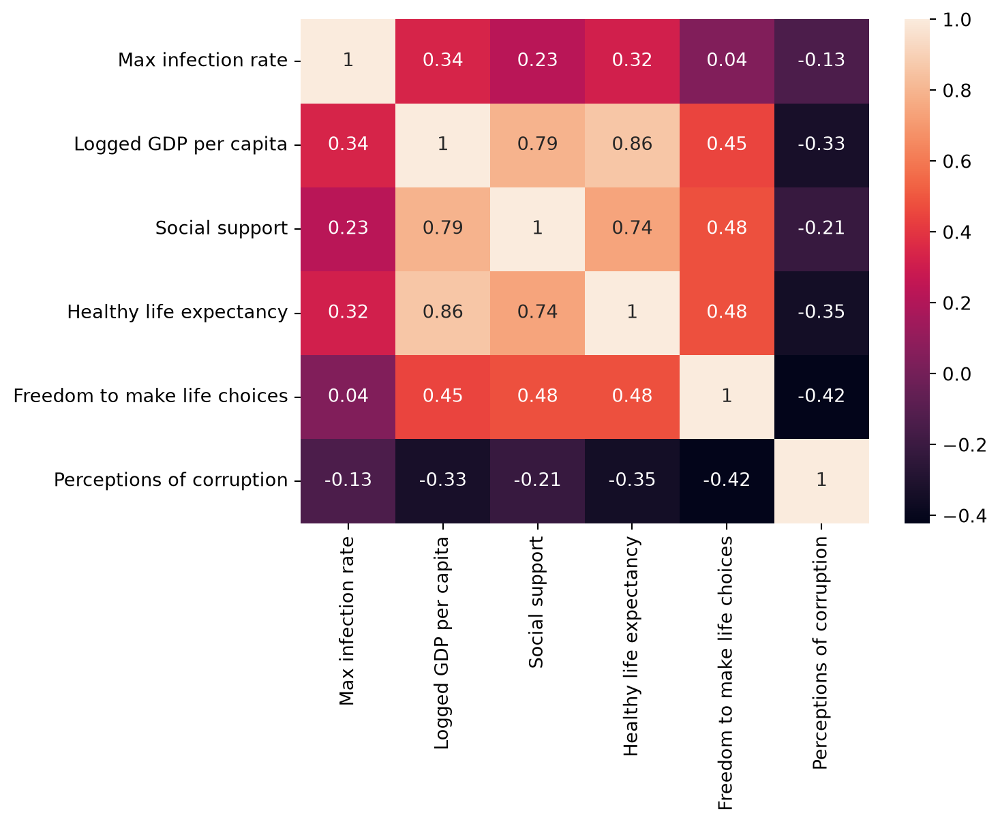
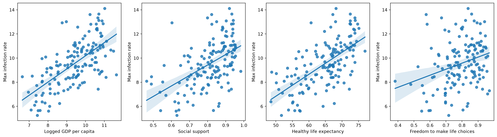
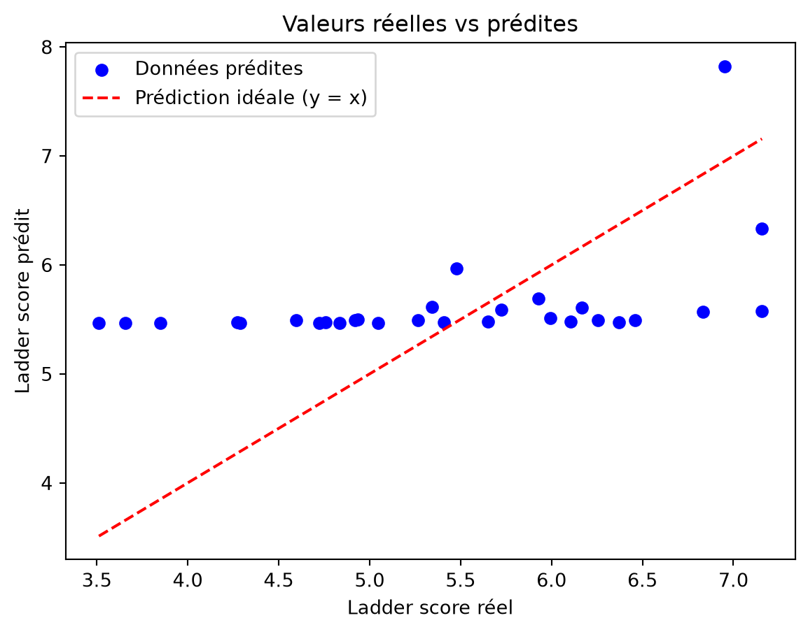

import pandas as pd
import numpy as np
import seaborn as sns
import matplotlib.pyplot as pltPartie 3 Analyse de la relation COVID-19 – Bonheur
Cette partie analyse la relation entre la pandémie de COVID-19 et les indicateurs de bonheur afin d’identifier d’éventuelles corrélations entre la situation sanitaire et le bien-être des populations.
1 Corrélations entre les indicateurs de bonheur
Cette partie analyse la relation entre la pandémie de COVID-19 et les indicateurs de bonheur en utilisant deux perspectives :
l’exposition globale au COVID-19 (cas totaux) l’intensité des vagues épidémiques (pic d’infection)
1.1 Analyse Analyse Total Cases
1.1.1 Chargement des données
merged_data = pd.read_csv("data/merged_data.csv",index_col=0)
merged_data.shape
merged_data.head()| Regional indicator | Ladder score | Logged GDP per capita | Social support | Healthy life expectancy | Freedom to make life choices | Generosity | Perceptions of corruption | Ladder score in Dystopia | Explained by: Log GDP per capita | ... | 3/1/23 | 3/2/23 | 3/3/23 | 3/4/23 | 3/5/23 | 3/6/23 | 3/7/23 | 3/8/23 | 3/9/23 | Total Cases | |
|---|---|---|---|---|---|---|---|---|---|---|---|---|---|---|---|---|---|---|---|---|---|
| Country name | |||||||||||||||||||||
| Finland | Western Europe | 7.842 | 10.775 | 0.954 | 72.0 | 0.949 | -0.098 | 0.186 | 2.43 | 1.446 | ... | 1462169 | 1462976 | 1462976 | 1462976 | 1462976 | 1462976 | 1462976 | 1462976 | 1463644 | 1463644 |
| Denmark | Western Europe | 7.620 | 10.933 | 0.954 | 72.7 | 0.946 | 0.030 | 0.179 | 2.43 | 1.502 | ... | 3450101 | 3450223 | 3450336 | 3450336 | 3450336 | 3450587 | 3450757 | 3450897 | 3451036 | 3451036 |
| Switzerland | Western Europe | 7.571 | 11.117 | 0.942 | 74.4 | 0.919 | 0.025 | 0.292 | 2.43 | 1.566 | ... | 4412439 | 4412439 | 4412439 | 4412439 | 4412439 | 4412439 | 4413911 | 4413911 | 4413911 | 4413911 |
| Iceland | Western Europe | 7.554 | 10.878 | 0.983 | 73.0 | 0.955 | 0.160 | 0.673 | 2.43 | 1.482 | ... | 209093 | 209093 | 209093 | 209093 | 209093 | 209093 | 209137 | 209137 | 209137 | 209137 |
| Netherlands | Western Europe | 7.464 | 10.932 | 0.942 | 72.4 | 0.913 | 0.175 | 0.338 | 2.43 | 1.501 | ... | 8709011 | 8709011 | 8710897 | 8710897 | 8710897 | 8710897 | 8712835 | 8712835 | 8712835 | 8712835 |
5 rows × 1161 columns
1.1.2 Top pays les plus touchés
merged_data["Total Cases"].sort_values(ascending=False).head(10)Country name
US 103802702
India 44690738
France 39866718
Germany 38249060
Brazil 37076053
Japan 33320438
Korea, South 30615522
Italy 25603510
United Kingdom 24658705
Russia 22075858
Name: Total Cases, dtype: int641.1.3 Transformation logarithmique
merged_data["log_cases"] = np.log1p(merged_data["Total Cases"])Cette transformation permet de réduire l’impact des valeurs extrêmes et de stabiliser les analyses statistiques.
1.1.4 Classement des pays
merged_data["cases_rank"] = merged_data["Total Cases"].rank(ascending=False)
merged_data.sort_values("cases_rank").head()| Regional indicator | Ladder score | Logged GDP per capita | Social support | Healthy life expectancy | Freedom to make life choices | Generosity | Perceptions of corruption | Ladder score in Dystopia | Explained by: Log GDP per capita | ... | 3/3/23 | 3/4/23 | 3/5/23 | 3/6/23 | 3/7/23 | 3/8/23 | 3/9/23 | Total Cases | log_cases | cases_rank | |
|---|---|---|---|---|---|---|---|---|---|---|---|---|---|---|---|---|---|---|---|---|---|
| Country name | |||||||||||||||||||||
| US | North America and ANZ | 6.951 | 11.023 | 0.920 | 68.200 | 0.837 | 0.098 | 0.698 | 2.43 | 1.533 | ... | 103648690 | 103650837 | 103646975 | 103655539 | 103690910 | 103755771 | 103802702 | 103802702 | 18.458003 | 1.0 |
| India | South Asia | 3.819 | 8.755 | 0.603 | 60.633 | 0.893 | 0.089 | 0.774 | 2.43 | 0.741 | ... | 44688722 | 44689046 | 44689327 | 44689593 | 44689919 | 44690298 | 44690738 | 44690738 | 17.615277 | 2.0 |
| France | Western Europe | 6.690 | 10.704 | 0.942 | 74.000 | 0.822 | -0.147 | 0.571 | 2.43 | 1.421 | ... | 39839090 | 39839090 | 39839090 | 39847236 | 39854299 | 39860410 | 39866718 | 39866718 | 17.501052 | 3.0 |
| Germany | Western Europe | 7.155 | 10.873 | 0.903 | 72.500 | 0.875 | 0.011 | 0.460 | 2.43 | 1.480 | ... | 38210850 | 38210850 | 38210851 | 38210851 | 38231610 | 38241231 | 38249060 | 38249060 | 17.459630 | 4.0 |
| Brazil | Latin America and Caribbean | 6.330 | 9.577 | 0.882 | 66.601 | 0.804 | -0.071 | 0.756 | 2.43 | 1.028 | ... | 37081209 | 37081209 | 37081209 | 37076053 | 37076053 | 37076053 | 37076053 | 37076053 | 17.428482 | 5.0 |
5 rows × 1163 columns
1.1.5 Top 10 COVID countries
merged_data = merged_data.reset_index()
merged_data.sort_values("Total Cases", ascending=False)[
["Country name", "Total Cases"]
].head(10)| Country name | Total Cases | |
|---|---|---|
| 18 | US | 103802702 |
| 134 | India | 44690738 |
| 20 | France | 39866718 |
| 12 | Germany | 38249060 |
| 33 | Brazil | 37076053 |
| 54 | Japan | 33320438 |
| 60 | Korea, South | 30615522 |
| 26 | Italy | 25603510 |
| 16 | United Kingdom | 24658705 |
| 73 | Russia | 22075858 |
1.1.6 Relation entre bonheur et COVID-19
merged_data[["Ladder score", "Total Cases"]].corr()
plt.scatter(
merged_data["Ladder score"],
merged_data["log_cases"]
)
plt.xlabel("Happiness score")
plt.ylabel("Total COVID cases (log scale)")
plt.title("Happiness vs COVID cases")
plt.show()
Ce nuage de points (scatter plot) met en relation le score de bonheur (axe X) et le nombre total de cas de COVID-19 en échelle logarithmique (axe Y). On observe une tendance positive visible entre les deux variables.
Signification :
De manière contre-intuitive, les pays présentant les scores de bonheur les plus élevés (entre 6 et 8) enregistrent également un nombre total de cas de COVID-19 plus important. Cela s’explique principalement par leur niveau de développement, leur forte connectivité internationale et leur urbanisation élevée. De plus, ces pays disposent de systèmes de santé performants et transparents, permettant un dépistage massif et un enregistrement plus fiable des données, contrairement à de nombreux pays moins développés.
1.2 Analyse Max infection rate
On va observer la relation entre le taux d’infection maximal et les indicateurs de bonheur
1.2.1 Chargement des données
# Calcul des corrélations```{python}
data_merge = pd.read_csv("data/data_merge.csv",index_col=0)
data_merge.head()| Logged GDP per capita | Social support | Healthy life expectancy | Freedom to make life choices | Perceptions of corruption | |
|---|---|---|---|---|---|
| Max infection rate | |||||
| 3243.0 | 7.695 | 0.463 | 52.493 | 0.382 | 0.924 |
| 4789.0 | 9.520 | 0.697 | 68.999 | 0.785 | 0.901 |
| 2521.0 | 9.342 | 0.802 | 66.005 | 0.480 | 0.752 |
| 139853.0 | 9.962 | 0.898 | 69.000 | 0.828 | 0.834 |
| 4388.0 | 9.487 | 0.799 | 67.055 | 0.825 | 0.629 |
1.2.2 Matrice de corrélation
data_merge_numeric = data_merge.reset_index()
corr_matrix = data_merge_numeric.corr()
sns.heatmap(corr_matrix, annot=True)
L’inclusion de la variable Max infection rate (taux d’infection maximal) dans la matrice de corrélation met en évidence plusieurs relations intéressantes entre la pandémie et les indicateurs de bien-être.
Interprétation des résultats :
PIB par habitant (0.34) et espérance de vie (0.32)
Corrélations positives modérées : les pays plus riches et en meilleure santé ont enregistré des taux d’infection maximaux plus élevés, ce qui peut s’expliquer par une forte connectivité internationale, une urbanisation importante et une meilleure capacité de dépistage.Soutien social (0.23)
Corrélation positive faible : l’impact du tissu social sur la propagation initiale du virus reste limité et indirect.Liberté de choix (0.04) et corruption (-0.13)
Corrélations proches de zéro : aucun lien statistiquement significatif n’est observé avec le taux d’infection maximal.
Conclusion :
La pandémie a davantage touché les pays développés, non pas en raison d’une plus faible résilience, mais en raison de leur forte connectivité internationale et de systèmes de surveillance sanitaire plus efficaces.
1.3 Comparaison des deux approches
Indicateurs liés au COVID-19
Deux indicateurs différents sont utilisés dans cette analyse :
- Total Cases : représente l’exposition globale à la pandémie.
- Max infection rate : mesure l’intensité maximale des vagues épidémiques.
Signification :
Ces deux approches sont complémentaires et permettent de mieux comprendre l’impact du COVID-19 sur les indicateurs de bien-être, en distinguant l’ampleur globale de la pandémie et la sévérité des pics d’infection.
2 Regression
2.1 Régression linéaire entre le taux d’infection maximal et les indicateurs de bonheur
fig, axs = plt.subplots(ncols=4, figsize=(20, 5))
oy = np.log(data_merge_numeric["Max infection rate"])
sns.regplot(x = data_merge_numeric['Logged GDP per capita'], y = oy , ax=axs[0])
sns.regplot(x = data_merge_numeric['Social support'], y = oy , ax=axs[1])
sns.regplot(x = data_merge_numeric['Healthy life expectancy'], y = oy , ax=axs[2])
sns.regplot(x = data_merge_numeric['Freedom to make life choices'], y = oy , ax=axs[3])
Afin d’étudier plus en détail les relations observées dans la matrice de corrélation, des régressions linéaires simples ont été réalisées entre le logarithme du taux d’infection maximal (Max infection rate) et plusieurs indicateurs du World Happiness Report.
L’utilisation du logarithme permet de réduire l’influence des valeurs extrêmes et de mieux visualiser les tendances générales présentes dans les données.
Analyse des résultats :
- Une relation positive est observée entre le taux d’infection maximal et le PIB par habitant.
- Une tendance similaire apparaît avec l’espérance de vie et le soutien social.
- La relation avec la liberté de faire des choix de vie semble beaucoup plus faible.
Ces résultats confirment les observations obtenues précédemment à partir de la matrice de corrélation : les pays les plus développés ont souvent enregistré des taux d’infection maximaux plus élevés, probablement en raison de leur forte connectivité internationale et de systèmes de surveillance sanitaire plus performants.
2.2 Régression linéaire multiple
2.2.1 Model 1
2.2.1.1 Variable cible (Y)
Y = merged_data["Ladder score"]2.2.1.2 Variables explicatives (X)
X = merged_data[["Total Cases", "Logged GDP per capita", "Social support", "Healthy life expectancy", "Freedom to make life choices", "Perceptions of corruption"]]2.2.1.3 Modèle de régression linéaire multiple
from sklearn.linear_model import LinearRegression
model = LinearRegression()
model.fit(X, Y)
print("R² =", model.score(X, Y))R² = 0.053306841104671432.2.1.4 Coefficients du modèle
coef_df = pd.DataFrame({
"Variable": X.columns,
"Coefficient": model.coef_
})
coef_df.sort_values(
"Coefficient",
ascending=False
)| Variable | Coefficient | |
|---|---|---|
| 0 | Total Cases | 2.144021e-08 |
| 3 | Healthy life expectancy | 3.254310e-15 |
| 1 | Logged GDP per capita | 6.366146e-16 |
| 2 | Social support | 3.888285e-17 |
| 4 | Freedom to make life choices | 1.521642e-17 |
| 5 | Perceptions of corruption | -2.720306e-17 |
2.2.1.5 Évaluation
from sklearn.model_selection import train_test_split
from sklearn.metrics import mean_squared_error
X_train, X_test, y_train, y_test = train_test_split(
X, Y,
test_size=0.2,
random_state=42
)
model = LinearRegression()
model.fit(X_train, y_train)
pred = model.predict(X_test)
print("R² :", model.score(X_test, y_test))
print("RMSE :", mean_squared_error(y_test, pred)**0.5)R² : 0.14910212357733876
RMSE : 0.925932992971965Le faible R² observé indique que la relation entre les variables explicatives et le score de bonheur n’est pas strictement linéaire. Bien que des corrélations fortes existent individuellement entre certaines variables (PIB, espérance de vie, soutien social), leur combinaison dans un modèle linéaire conduit à un phénomène de redondance (multicolinéarité), réduisant ainsi la capacité explicative globale du modèle.
De plus, l’ajout du nombre total de cas de COVID-19 introduit du bruit plutôt qu’une information explicative pertinente, car cette variable dépend fortement de facteurs externes (population, politique de test, reporting des données) et non directement du bien-être.
2.2.1.6 Graphique réel vs prédit
plt.scatter(y_test, pred, color="blue", label="Données prédites")
plt.plot(
[y_test.min(), y_test.max()],
[y_test.min(), y_test.max()],
color="red", linestyle="--", label="Prédiction idéale (y = x)"
)
plt.xlabel("Ladder score réel")
plt.ylabel("Ladder score prédit")
plt.title("Valeurs réelles vs prédites")
plt.legend()
plt.show()
Le graphique montre une forte concentration des points alignés horizontalement autour de la valeur prédite de 5.5, tandis que les valeurs réelles s’étendent de 3.5 à plus de 7. L’écart important entre le nuage de points et la ligne idéale de prédiction (\(y = x\)) met en évidence les limites du modèle actuel.
\(R^2 = 0.149\) : Le coefficient de détermination est très faible. Les variables explicatives utilisées dans ce premier modèle ne permettent d’expliquer qu’environ 15% de la variance du score de bonheur (Ladder score). Les 85% restants sont liés à d’autres facteurs non capturés par ce modèle linéaire simple.
RMSE = 0.926 : L’erreur quadratique moyenne indique qu’en moyenne, les prédictions du modèle s’écartent d’environ 0.93 point par rapport aux valeurs réelles du score de bonheur. Sur une échelle de 0 à 10, cette erreur reste relativement importante.
Conclusion:
Ces résultats suggèrent que la relation entre les variables explicatives et le score de bonheur n’est pas parfaitement linéaire, ou que certaines variables introduisent du bruit dans le modèle, notamment celles liées au contexte COVID-19. Une analyse du second modèle permettra de vérifier si une sélection différente de variables améliore la performance globale de la régression.
2.2.2 Model 2
from sklearn.linear_model import LinearRegression
X = data_merge_numeric[
[
'Logged GDP per capita',
'Social support',
'Healthy life expectancy',
'Freedom to make life choices',
'Perceptions of corruption'
]
]
y = np.log(data_merge_numeric["Max infection rate"])
model = LinearRegression()
model.fit(X, y)
print(model.score(X, y))0.4495277408385362Les résultats montrent une différence importante entre les deux modèles. Le modèle expliquant le taux d’infection maximal présente une capacité prédictive modérée (R² ≈ 0.45), tandis que celui expliquant le niveau de bonheur est beaucoup plus faible (R² ≈ 0.05).
Cela s’explique par le fait que les variables socio-économiques utilisées ont une influence plus directe et mesurable sur la propagation du COVID-19 que sur un concept multidimensionnel et subjectif comme le bonheur.